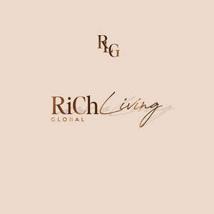

Trade Mark Journal No.2025/041 10 October 2025
UK00004261771 9 September 2025 (9,16,18,25,39,41,42,44)

- Class 9
- Downloadable mobile applications; Downloadable computer software; Downloadable electronic publications.
- Class 16
- Printed matter; Diaries [printed matter]; Planners [printed matter]; Stationery; Notebooks; Spiral-bound notebooks; Pocket notebooks; Blank paper notebooks; Notepads; Notebook covers; Paper stationery; Pens; Pencils; Stationery boxes; Scribbling pads; Blank journal books; Blank writing journals; Pocket diaries; Writing stationery; Blank journals; Pads [stationery]; Pen and pencil cases; Notepaper; Ballpoint pens; Writing paper pads; Diaries; Calendars.
- Class 18
- Luggage; Luggage bags; Travel luggage; Trunks [luggage]; Luggage trunks; Wheeled luggage; Carry-on suitcases; Tags for luggage; Luggage tags; Suitcases; Luggage, bags, wallets and other carriers; Luggage covers; Carry-on bags; Baggage; Travel baggage; Duffel bags for travel; Trunks and suitcases; Wheeled suitcases; Suitcase packing organizers / Luggage organizers set; Travelling bags; Duffel bags; Suitcases with wheels; Trunks and travelling bags; Airline travel bags; Duffle bags; Bags for travel; Travel bags; Overnight suitcases; Flight bags; Wash bags for carrying toiletries; Trunks and traveling bags; Shoe bags for travel; Baggage tags; Motorized suitcases; Traveling bags; Toiletry bags; Carrying bags; Garment bags for travel; Bags; Bags for clothes; Cabin bags; Trolley duffels; Roller suitcases; Wheeled bags; Small suitcases; Compression cubes adapted for luggage; Smart suitcases; Backpacks; Backpacks [rucksacks]; Small backpacks; Tote bags.
- Class 25
- Clothing; Clothes; Maternity clothing; Casual clothing; Visors [clothing]; Playsuits [clothing]; Clothing for leisure wear; Athletic clothing; Tops [clothing]; Loungewear; Sleepwear; Nightwear; Casualwear; Maternity sleepwear; Gymwear; Sportswear; Footwear; Headgear; Visors [headwear]; Headwear; Bonnets [headwear]; Caps [headwear]; Caps being headwear; Sun visors [headwear]; Headbands for clothing; Turbans.
- Class 39
- Travel arrangement; Travel booking agencies; Providing transport and travel information.
- Class 41
- Arranging and conducting of workshops; Arranging and conducting workshops; Arranging and conducting of seminars and workshops; Arranging and conducting of workshops and seminars; Arranging and conducting of seminars; Arranging and conducting of training workshops; Arranging, conducting and organisation of workshops; Arranging of workshops; Arranging and conducting of lectures; Arranging and conducting of conferences; Arranging and conducting conferences; Arranging and conducting of classes; Arranging and conducting of training seminars; Arranging, conducting and organisation of seminars; Arranging and conducting conferences and seminars; Arranging and conducting of educational seminars; Arranging and conducting of tutorials; Arranging, conducting and organization of seminars; Arranging and conducting competitions; Arranging of workshops and seminars; Arranging of seminars; Arranging, conducting and organisation of conferences; Arranging and conducting of training courses; Organisation of educational events; Organisation of cultural events; Organisation of educational seminars; Organisation of entertainment events; Organisation of entertainment and cultural events; Organisation of educational shows; Organization of events for cultural purposes; Organization of educational conferences; Arranging of educational events; Conducting of educational events.
- Class 42
- Software as a service [SaaS]; Hosting services, software as a service, and rental of software; Providing temporary use of on-line non-downloadable software.
- Class 44
- Health spa services; Mental health services; Beauty care services provided by a health spa; Information services relating to health care; Beauty care services; Health care services offered through a network of health care providers on a contract basis; Spa services; Beauty spa services; Providing health information; Information relating to health; Providing nutritional information about food; Providing information about beauty; Health advice and information services; Information relating to beauty care; Providing information relating to medical services; Providing information relating to beauty salon services; Advisory services relating to health; Advisory services relating to health care; Advisory services relating to beauty care; Advisory services relating to medical services; Advisory services relating to diet; Advisory services relating to beauty; Advisory services relating to beauty treatment; Advisory services relating to cosmetics; Advisory services relating to hair care; Advisory services relating to pharmacies.
RiCh Living Global (LTD)